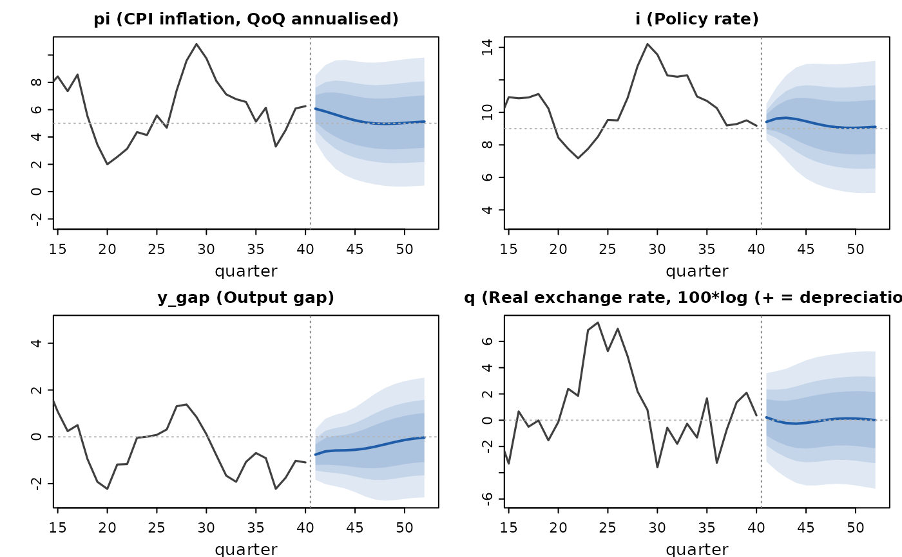

Iterates the solved model forward from an initial state and computes
analytic forecast uncertainty from the shock variances,
$$V_h = P V_{h-1} P' + Q S Q'$$
giving Gaussian fan bands around the mean path. The result can then be
conditioned on assumed paths with qpm_condition(), shifted by shock
scenarios with qpm_scenario(), or adjusted with logged judgment via
add_judgment().
Usage
qpm_forecast(
object,
from = NULL,
horizon = 12,
bands = c(0.5, 0.7, 0.9),
sigma = NULL
)Arguments
- object
A
qpm_solution.- from
Initial state: a
qpm_filtrationfromqpm_filter()(the smoothed end-of-sample state is used and the smoothed history is kept for plotting), aqpm_simfromsimulate(), a full named deviation vector overobject$vars_all, orNULL(steady state).- horizon
Forecast horizon in quarters.
- bands
Coverage levels for the fan, e.g.
c(0.5, 0.7, 0.9).- sigma
Optional named vector of shock standard deviations.
Value
An object of class qpm_forecast: a list with paths (long
data frame: variable, h, mean, and lo_*/hi_* per band, in
levels), forecast-period labels in $periods, plus the machinery
needed for conditioning.
Examples
sol <- qpm_solve(qpm_template("bkl"))
histq <- simulate(sol, nsim = 40, seed = 7, burn = 20)
fc <- qpm_forecast(sol, from = histq, horizon = 12)
fc
#> <qpm_forecast> Canonical small open economy QPM (BKL, stationary trends) - 12 quarters ahead (h1 ... h12)
#> mean (90% band) at h = 1, 4, 8, 12:
#> y_gap -0.76 (-1.83, 0.31) -0.58 (-2.2, 1.05) -0.32 (-2.73, 2.08) -0.03 (-2.59, 2.53)
#> pi 6.07 (3.64, 8.5) 5.42 (1.19, 9.64) 4.96 (0.42, 9.5) 5.13 (0.45, 9.81)
#> pi4 5.73 (5.12, 6.34) 5.75 ( 2.8, 8.7) 5.06 (1.37, 8.75) 5.05 (1.13, 8.97)
#> i 9.41 ( 8.3, 10.5) 9.59 (6.41, 12.8) 9.09 (5.23, 12.9) 9.11 (5.05, 13.2)
#> r 3.55 (1.83, 5.26) 4.37 (2.12, 6.62) 4.11 (0.88, 7.33) 3.95 (0.56, 7.35)
#> r_gap -0.26 (-1.98, 1.46) 0.51 (-1.73, 2.75) 0.2 (-3.04, 3.44) 0.01 (-3.41, 3.44)
#> q 0.22 (-3.15, 3.58) -0.26 (-4.77, 4.24) 0.1 (-4.84, 5.04) 0.01 (-5.21, 5.23)
#> q_gap 1.19 (-2.18, 4.56) 0.44 (-4.03, 4.92) 0.57 (-4.31, 5.44) 0.31 (-4.84, 5.47)
#> q_bar -0.97 (-1.47, -0.48) -0.71 (-1.56, 0.15) -0.47 (-1.49, 0.56) -0.31 (-1.39, 0.78)
#> r_bar 3.81 (3.48, 4.14) 3.86 (3.29, 4.43) 3.91 (3.23, 4.59) 3.94 (3.22, 4.66)
#> dy_obs 4.63 (0.03, 9.24) 3.41 (-2.12, 8.94) 3.83 (-2.2, 9.86) 3.62 (-2.78, 10)
#> dy_bar 3.3 (2.97, 3.63) 3.38 (2.85, 3.91) 3.44 (2.84, 4.04) 3.47 (2.85, 4.08)
#> ystar_gap -0.42 (-0.91, 0.07) -0.21 (-0.96, 0.54) -0.09 (-0.9, 0.72) -0.04 (-0.86, 0.78)
#> istar 3.53 (3.04, 4.03) 3.33 (2.53, 4.13) 3.17 (2.27, 4.07) 3.09 (2.16, 4.02)
#> pistar 2.44 (1.62, 3.27) 2.15 (1.03, 3.27) 2.04 (0.89, 3.19) 2.01 (0.86, 3.16)
#> rstar 1.22 (0.47, 1.98) 1.22 ( 0.1, 2.34) 1.15 (-0.06, 2.35) 1.08 (-0.15, 2.31)
#> prem 2.89 (2.06, 3.71) 2.93 ( 1.6, 4.26) 2.96 (1.46, 4.47) 2.98 (1.44, 4.53)
plot(fc, vars = c("pi", "i", "y_gap", "q"))
